29-keepalived高可用性负载均衡
软件官网
http://www.keepalived.org/
咱们现在已经进入到期中综合架构的最后一个环节了。
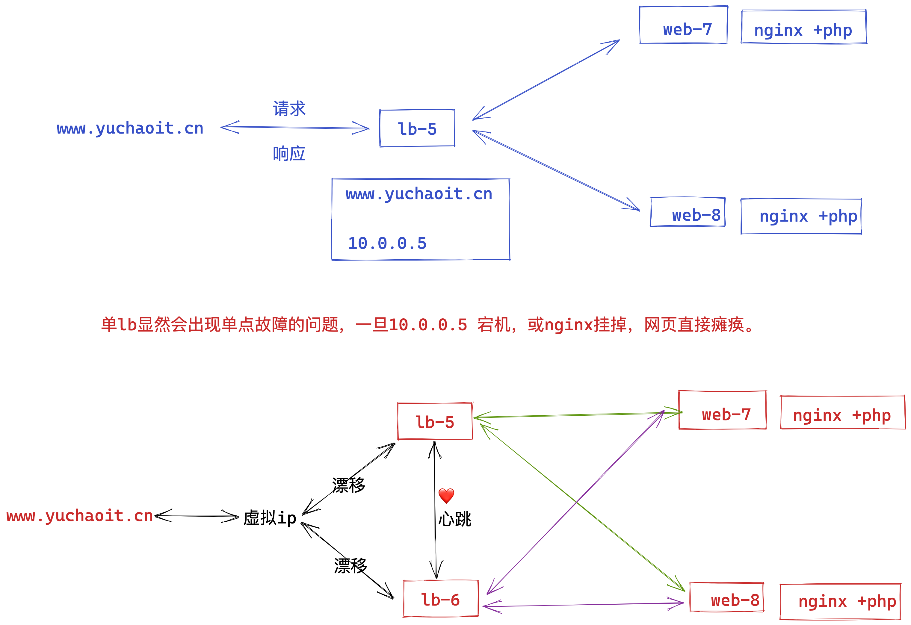
为什么需要keepalived
上图明显看出，LB机器应该是双节点，否则出现单点故障的问题，并且LB作为网站的入口，显然要提供高可用性的访问。
keepalived就是解决了单点故障的问题，给两台不同IP的服务器提供了自动漂移虚拟IP的功能。
lb-5机器如果宕机，这个虚拟IP自动切换到lb-6机器上，这个过程对用户是透明的，不会感知到网站有任意问题。
keepalived工作原理
实现高可用的基本原理是
1. 两台LB机器均部署好keepalived工具，并且启动服务；
2. 角色是master的机器获得IP资源且为用户提供访问（nginx）
3. 角色是backup的机器作为master的热备机器（master挂了，立即接替）
故障时
1. 当master出现故障时
2. backup机器自动接管master的所有工作，接管VIP以及其他资源。
修复后
1. master修复后，自动接管它本身的资源，如VIP。
2. backup自动释放接管的资源。
此时两台机器恢复启动时的角色，以及工作状态。
VRRP协议
keepalived主要是通过VRRP这个协议实现的高可用功能，实现的虚拟IP在两台机器上漂移。
VRRP的出现很好地解决了这个问题。
VRRP将多台设备组成一个虚拟设备，通过配置虚拟设备的IP地址为缺省网关，实现缺省网关的备份。
当网关设备发生故障时，VRRP机制能够选举新的网关设备承担数据流量，从而保障网络的可靠通信。
如下图所示，当Master设备故障时，发往缺省网关的流量将由Backup设备进行转发。
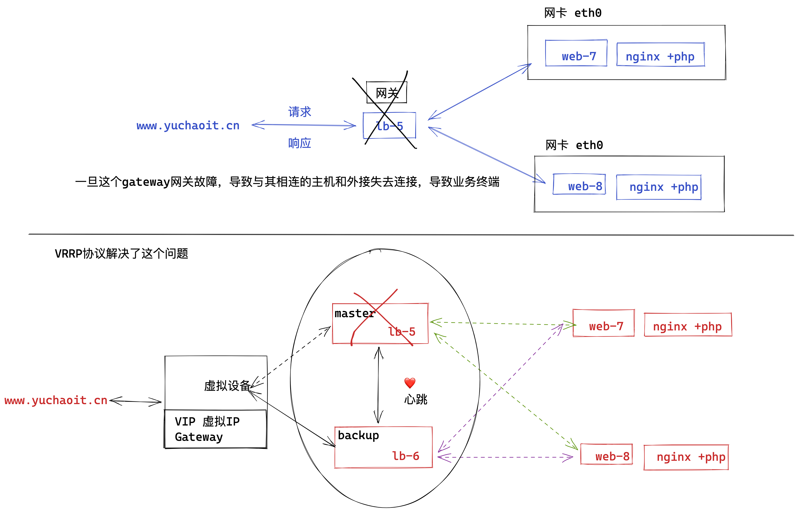
VRRP工作原理
VRRP协议中定义了三种状态机：初始状态（Initialize）、活动状态（Master）、备份状态（Backup）。
其中，只有处于Master状态的设备才可以转发那些发送到虚拟IP地址的报文。
下表详细描述了三种状态。
| 状态 | 说明 |
|---|---|
| Initialize | 该状态为VRRP不可用状态，在此状态时设备不会对VRRP通告报文做任何处理。通常设备启动时或设备检测到故障时会进入Initialize状态。 |
| Master | 当VRRP设备处于Master状态时，它将会承担虚拟路由设备的所有转发工作，并定期向整个虚拟内发送VRRP通告报文。 |
| Backup | 当VRRP设备处于Backup状态时，它不会承担虚拟路由设备的转发工作，并定期接受Master设备的VRRP通告报文，判断Master的工作状态是否正常。 |
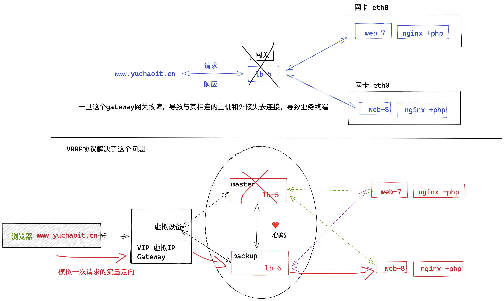
VRRP配置前提条件
1. 虚拟IP不得重复
2. 虚拟IP得和相同网段的网卡绑定
面试拿出来背即可
1. keppalived高可用是基于VRRP虚拟路由冗余协议实现的，因此我从VRRP给您描述起
2. VRRP也就是虚拟路由冗余协议，是为了解决静态路由的单点故障；
3. VRRP通过竞选协议将路由任务交给某一台VRRP路由器。
4. VRRP正常工作时，master会自动发送数据包，backup接收数据包，目的是为了判断对方是否存活；如果backup收不到master的数据包了，自动接管master的资源；
backup节点可以有多个，通过优先级竞选，但是keepalived服务器一般都是成对出现；
5. VRRP默认对数据包进行了加密，但是官网默认还是推荐使用明文来配置认证；
说完了VRRP，我再给您描述下keepalived工作原理。
1.keepalived就是基于VRRP协议实现的高可用，master的优先级必须高于backup，因此启动时master优先获得机器的IP资源，backup处于等待状态；若master挂掉后，backup顶替上来，继续提供服务。
2.在keepalived工作时，master角色的机器会一直发送VRRP广播数据包，告诉其他backup机器，“我还活着”，此时backup不会抢夺资源，老实呆着。
当master出现问题挂了，导致backup收不到master发来的广播数据包，因此开始接替VIP，保证业务的不中断运行，整个过程小于1秒。
1.环境准备
lb-5 10.0.0.5 keepalived-master机器 nginx-lb-5
lb-6 10.0.0.6 keepalived-backup机器 nginx-lb-6
web-7 10.0.0.7 web服务器
web-8 10.0.0.8 web服务器
2.安装keepalived（两台机器）
yum install keepalived -y
3.创建keepalived配置文件(lb-5)
global_defs {
router_id lb-5 # 路由器ID，每个机器不一样
}
vrrp_instance VIP_1 { # 设置VRRP路由器组组名，属于同一组的名字一样
state MASTER # 角色，master、backup两种
interface eth0 # VIP绑定的网卡
virtual_router_id 50 # 虚拟路由IP，同一组的一样
priority 150 # 优先级，优先级越高，权重越高
advert_int 1 # 发送组播间隔1s
authentication { # 认证形式
auth_type PASS # 密码认证，明文密码 1111
auth_pass 1111
}
virtual_ipaddress {
10.0.0.3 # 指定虚拟VIP地址，必须没人使用
}
}
使用如下配置
[root@lb-5 ~]#cat /etc/keepalived/keepalived.conf
global_defs {
router_id lb-5
}
vrrp_instance VIP_1 {
state MASTER
interface eth0
virtual_router_id 50
priority 150
advert_int 1
authentication {
auth_type PASS
auth_pass 1111
}
virtual_ipaddress {
10.0.0.3
}
}
[root@lb-5 ~]#
4.backup配置文件(lb-6)
[root@lb-6 ~]#cat /etc/keepalived/keepalived.conf
global_defs {
router_id lb-6
}
vrrp_instance VIP_1 {
state BACKUP
interface eth0
virtual_router_id 50
priority 100
advert_int 1
authentication {
auth_type PASS
auth_pass 1111
}
virtual_ipaddress {
10.0.0.3
}
}
5.启动keepalived(两台lb)
1.先检查当前的网卡情况
[root@lb-5 ~]#ip addr show eth0
2: eth0: <BROADCAST,MULTICAST,UP,LOWER_UP> mtu 1500 qdisc pfifo_fast state UP group default qlen 1000
link/ether 00:0c:29:eb:fe:a9 brd ff:ff:ff:ff:ff:ff
inet 10.0.0.5/24 brd 10.0.0.255 scope global noprefixroute eth0
valid_lft forever preferred_lft forever
inet6 fe80::20c:29ff:feeb:fea9/64 scope link
valid_lft forever preferred_lft forever
[root@lb-5 ~]#
[root@lb-6 ~]#ip addr show eth0
2: eth0: <BROADCAST,MULTICAST,UP,LOWER_UP> mtu 1500 qdisc pfifo_fast state UP group default qlen 1000
link/ether 00:0c:29:55:9f:53 brd ff:ff:ff:ff:ff:ff
inet 10.0.0.6/24 brd 10.0.0.255 scope global noprefixroute eth0
valid_lft forever preferred_lft forever
inet6 fe80::20c:29ff:fe55:9f53/64 scope link
valid_lft forever preferred_lft forever
[root@lb-6 ~]#
启动服务
systemctl start keepalived
再次检查VIP情况
[root@lb-5 ~]#ip addr show eth0
2: eth0: <BROADCAST,MULTICAST,UP,LOWER_UP> mtu 1500 qdisc pfifo_fast state UP group default qlen 1000
link/ether 00:0c:29:eb:fe:a9 brd ff:ff:ff:ff:ff:ff
inet 10.0.0.5/24 brd 10.0.0.255 scope global noprefixroute eth0
valid_lft forever preferred_lft forever
inet 10.0.0.3/32 scope global eth0
valid_lft forever preferred_lft forever
inet6 fe80::20c:29ff:feeb:fea9/64 scope link
valid_lft forever preferred_lft forever
[root@lb-5 ~]#
[root@lb-6 ~]#ip addr show eth0
2: eth0: <BROADCAST,MULTICAST,UP,LOWER_UP> mtu 1500 qdisc pfifo_fast state UP group default qlen 1000
link/ether 00:0c:29:55:9f:53 brd ff:ff:ff:ff:ff:ff
inet 10.0.0.6/24 brd 10.0.0.255 scope global noprefixroute eth0
valid_lft forever preferred_lft forever
inet6 fe80::20c:29ff:fe55:9f53/64 scope link
valid_lft forever preferred_lft forever
[root@lb-6 ~]#
6.结合nginx测试(两台lb)
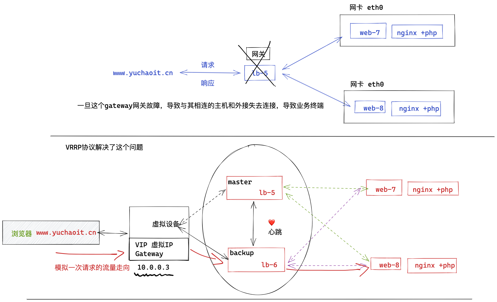
6.1 lb-5
[root@lb-5 /etc/nginx/conf.d]#cat lb.conf
upstream web_pools {
server 10.0.0.7;
server 10.0.0.8;
}
server {
listen 80;
server_name _;
location / {
proxy_pass http://web_pools;
include proxy_params;
}
}
[root@lb-5 /etc/nginx/conf.d]#cat /etc/nginx/proxy_params
proxy_set_header Host $http_host;
proxy_set_header X-Forwarded-For $proxy_add_x_forwarded_for;
proxy_connect_timeout 30;
proxy_send_timeout 60;
proxy_read_timeout 60;
proxy_buffering on;
proxy_buffer_size 32k;
proxy_buffers 4 128k;
[root@lb-5 /etc/nginx/conf.d]#nginx -t
nginx: the configuration file /etc/nginx/nginx.conf syntax is ok
nginx: configuration file /etc/nginx/nginx.conf test is successful
[root@lb-5 /etc/nginx/conf.d]#systemctl restart nginx
6.2 lb-6
[root@lb-6 /etc/nginx/conf.d]#systemctl restart nginx
[root@lb-6 /etc/nginx/conf.d]#
[root@lb-6 /etc/nginx/conf.d]#
[root@lb-6 /etc/nginx/conf.d]#ls
lb.conf
[root@lb-6 /etc/nginx/conf.d]#cat lb.conf
upstream web_pools {
server 10.0.0.7;
server 10.0.0.8;
}
server {
listen 80;
server_name _;
location / {
proxy_pass http://web_pools;
include proxy_params;
}
}
[root@lb-6 /etc/nginx/conf.d]#
[root@lb-6 /etc/nginx/conf.d]#cat /etc/nginx/proxy_params
proxy_set_header Host $http_host;
proxy_set_header X-Forwarded-For $proxy_add_x_forwarded_for;
proxy_connect_timeout 30;
proxy_send_timeout 60;
proxy_read_timeout 60;
proxy_buffering on;
proxy_buffer_size 32k;
proxy_buffers 4 128k;
6.3 web-7、web-8
# cat web.conf
server {
listen 80;
server_name _;
charset utf-8;
location / {
root /code;
index index.html;
}
}
# 创建测试数据
echo '你好，我是web-7，你也是来学linux的吗?' > /code/index.html
echo '你好，我是web-8，你也是来学linux的吗?' > /code/index.html
7.客户端访问（访问VIP）
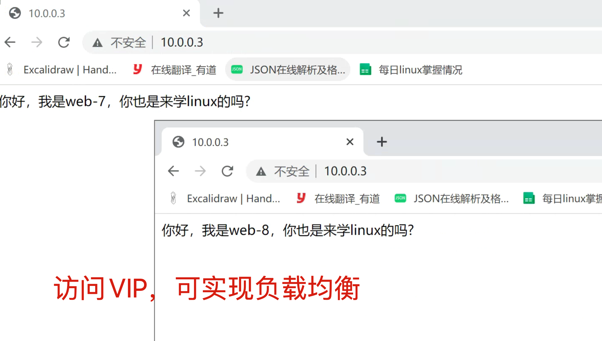
8.模拟master故障，查看VIP
当前VIP在lb-5机器上
[root@lb-5 ~]#ip a show eth0
2: eth0: <BROADCAST,MULTICAST,UP,LOWER_UP> mtu 1500 qdisc pfifo_fast state UP group default qlen 1000
link/ether 00:0c:29:eb:fe:a9 brd ff:ff:ff:ff:ff:ff
inet 10.0.0.5/24 brd 10.0.0.255 scope global noprefixroute eth0
valid_lft forever preferred_lft forever
inet 10.0.0.3/32 scope global eth0
valid_lft forever preferred_lft forever
inet6 fe80::20c:29ff:feeb:fea9/64 scope link
valid_lft forever preferred_lft forever
lb-6的IP情况
[root@lb-6 ~]#ip a show eth0
2: eth0: <BROADCAST,MULTICAST,UP,LOWER_UP> mtu 1500 qdisc pfifo_fast state UP group default qlen 1000
link/ether 00:0c:29:55:9f:53 brd ff:ff:ff:ff:ff:ff
inet 10.0.0.6/24 brd 10.0.0.255 scope global noprefixroute eth0
valid_lft forever preferred_lft forever
inet6 fe80::20c:29ff:fe55:9f53/64 scope link
valid_lft forever preferred_lft forever
关闭master的keepalived服务
[root@lb-5 ~]#systemctl stop keepalived
查看此时服务会中断吗？继续访问10.0.0.3
查看lb-6机器是否实现了VIP漂移。
[root@lb-6 ~]#ip a
1: lo: <LOOPBACK,UP,LOWER_UP> mtu 65536 qdisc noqueue state UNKNOWN group default qlen 1000
link/loopback 00:00:00:00:00:00 brd 00:00:00:00:00:00
inet 127.0.0.1/8 scope host lo
valid_lft forever preferred_lft forever
inet6 ::1/128 scope host
valid_lft forever preferred_lft forever
2: eth0: <BROADCAST,MULTICAST,UP,LOWER_UP> mtu 1500 qdisc pfifo_fast state UP group default qlen 1000
link/ether 00:0c:29:55:9f:53 brd ff:ff:ff:ff:ff:ff
inet 10.0.0.6/24 brd 10.0.0.255 scope global noprefixroute eth0
valid_lft forever preferred_lft forever
inet 10.0.0.3/32 scope global eth0
valid_lft forever preferred_lft forever
inet6 fe80::20c:29ff:fe55:9f53/64 scope link
valid_lft forever preferred_lft forever
3: eth1: <BROADCAST,MULTICAST,UP,LOWER_UP> mtu 1500 qdisc pfifo_fast state UP group default qlen 1000
link/ether 00:0c:29:55:9f:5d brd ff:ff:ff:ff:ff:ff
inet 172.16.1.6/24 brd 172.16.1.255 scope global noprefixroute eth1
valid_lft forever preferred_lft forever
inet6 fe80::20c:29ff:fe55:9f5d/64 scope link
valid_lft forever preferred_lft forever
9.恢复lb-5的keepalived服务
[root@lb-5 ~]#systemctl start keepalived
查看此时VIP又漂移到了那里。
backup机器的VIP是否消失。
Keepalived脑裂问题
简单说就是如果master还在正常工作，但是backup没有正确接收到master的心跳数据包，就会以为master挂掉了，抢夺VIP资源。
这个世道就会导致两个服务器都有了VIP，导致冲突故障，这就是脑裂问题。
1.导致脑裂的原因
要实现心跳检测，需要让至少两台服务器实现互相通信，数据包收发，主要通过如下方式实现
- （生产环境下做法）直接网线让两台服务器直连
- 也可以通过局域网通信，确保两台机器可以连接。
高可用软件基于这个心跳线来判断对端机器是否存活，决定是否要实现故障迁移，VIP迁移，保证业务的连续性。
一般来说，导致脑裂的原因有这些，也是排错思路
- 心跳线老化，线路破损，导致无法通信
- 网卡驱动损坏，master、backup IP地址冲突。
- 防火墙配置错误，导致心跳消息收不到
- 配置文写错了，两台机器的虚拟路由ID不一致。
2.解决脑裂
- 使用双心跳线路，防止单线路损坏，只要确保master的心跳数据包能发给backup。
- 通过脚本程序检测脑裂情况
- 判断是否两边都有VIP，如果心跳重复，强制关闭一个心跳节点（直接发送关机命令，强制断掉主节点的电源）
- 做好脑裂监控，如果发现脑裂，人为第一时间干预处理。
- 如果开启了防火墙，注意要允许心跳IP的访问。
keepalived组播原理
单播流量走向图
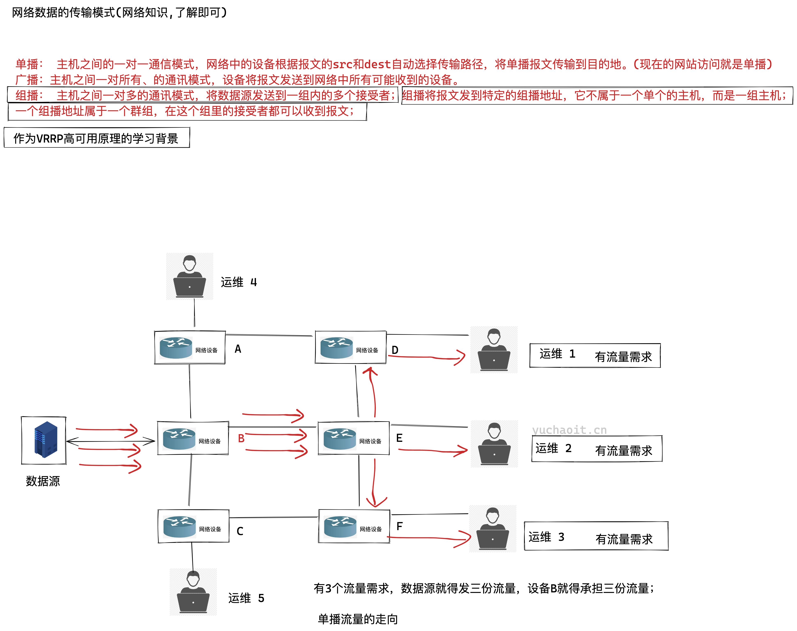
广播数据流
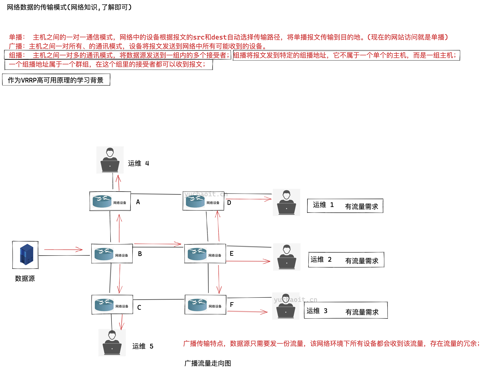
组播数据流
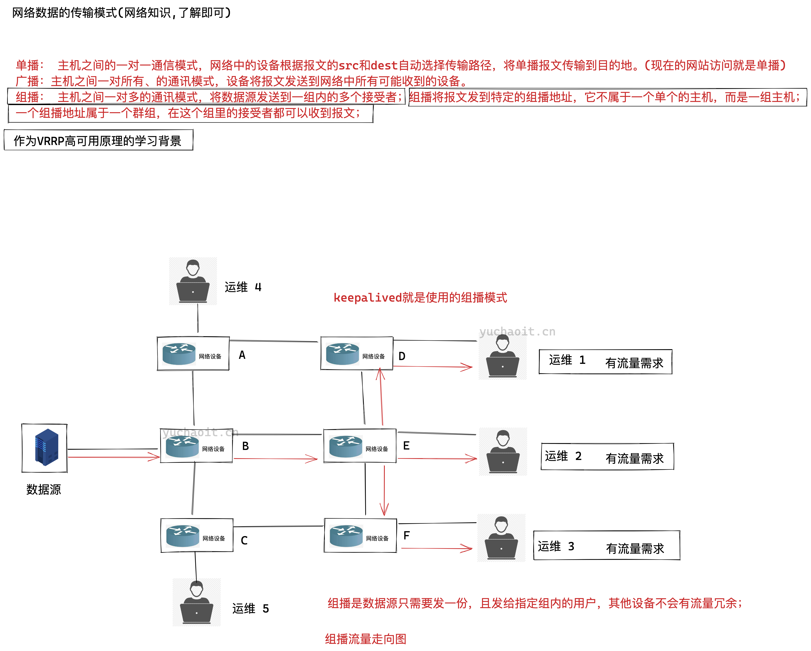
keepalived组播地址
组播： 主机之间一对多的通讯模式，将数据源发送到一组内的多个接受者；组播将报文发到特定的组播地址，它不属于一个单个的主机，而是一组主机；
一个组播地址属于一个群组，在这个组里的接受者都可以收到报文；
keepalived默认使用VRRP虚拟路由器冗余协议，在默认组播224.0.0.18这个IP地址以实现在master和backup机器之间进行通信，实现健康检查。
抓包查看VRRP
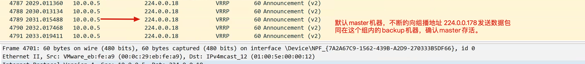
停止master试试
[root@lb-5 ~]#systemctl stop keepalived
心跳切换原理
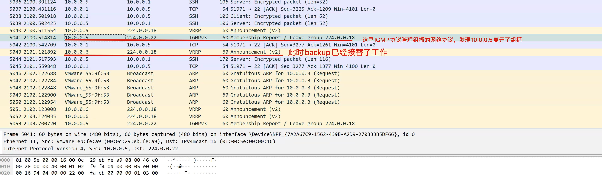
backup切换原理
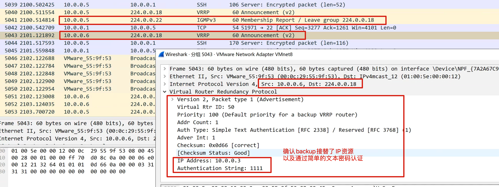
抓包工具查看脑裂
这里在linux下进行抓包。
lb-5安装tcpdump
[root@lb-5 ~]#yum install tcpdump -y
lb-5抓包
# 参数
# -nn： 指定将每个监听到的数据包中的域名转换成IP、端口从应用名称转换成端口号后显示
# -i 指定监听的网络接口；
# any 抓取所有网络接口
# host 指定抓取的主机地址，这里是组播地址。
tcpdump -nn -i any host 224.0.0.18
lb-6开启防火墙
开启防火墙后，导致lb-5没法和lb-6正常通信，backup以为master挂了，抢夺VIP资源。
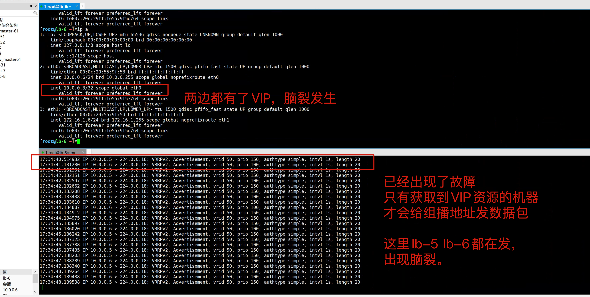
此时高可用集群就已故障，无法正常漂移切换VIP了。
1.停止master keepalived
2. 发现backup也无法正常工作
停止lb-6的防火墙
可正确恢复 keepalived；
因为你只要确保master能通过给组播发消息，确保backup能收到。
两边的高可用心跳就没问题。
解决脑裂的方案
防火墙规则放行
# 只要启动服务就会抢夺VIP
systemctl restart firewalld
# VIP应该会消失，VRRP正常
iptables -I INPUT -i eth0 -d 224.0.0.0/8 -p vrrp -j ACCEPT
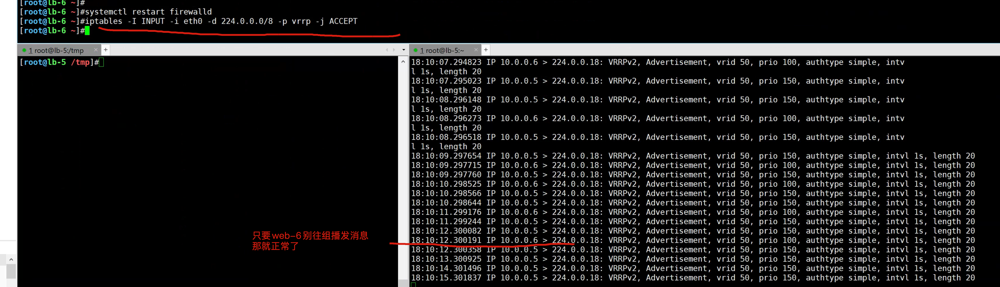
防止脑裂的脚本开发
更靠谱的做法是，自己编写shell脚本，核心思路是
确保backup机器定时去判断master的VIP状态，如果发生脑裂，backup自杀即可（kill keepalived）
防止脑裂脚本思路
先有思路，再写脚本
针对backup服务器
1. backup定期检查master的nginx是否运行
2. backup定期检查自己是否有VIP
3. 如果有如下情况，backup却也有VIP，就是脑裂
- master的nginx正常
- master有VIP
- backup有VIP
4. 如果backup有脑裂，就干掉自己的keepalived
5. 告知管理员。
1.backup脚本开发
cat > /etc/keepalived/check_vip.sh << 'EOF'
#!/bin/bash
MASTER_VIP=$(ssh 10.0.0.5 ip a|grep 10.0.0.3|wc -l)
MY_VIP=$(ip a|grep 10.0.0.3|wc -l)
# 如果远程有VIP并且自己本地也存在了VIP，就干掉自己
if [ ${MASTER_VIP} == 1 -a ${MY_VIP} == 1 ]
then
systemctl stop keepalived
fi
EOF
2. backup服务调用自杀脚本
这里是利用了keepalived自身提供的vrrp_script脚本功能，实现监控，自动干掉自己。。
前提条件是
- 脚本添加执行权限
- lb-6和lb-5免密登录
cat > /etc/keepalived/keepalived.conf << 'EOF'
global_defs {
router_id lb-6
}
# 定义脚本
vrrp_script check_vip {
script "/etc/keepalived/check_vip.sh"
interval 5 # 脚本执行的时间间隔
}
vrrp_instance VIP_1 {
state BACKUP
interface eth0
virtual_router_id 50
priority 100
advert_int 1
authentication {
auth_type PASS
auth_pass 1111
}
virtual_ipaddress {
10.0.0.3
}
# 调动脚本
track_script {
check_vip
}
}
EOF
3.测试backup的监控脚本
1. 确保master、backup正常
systemctl restart keepalived
2. 主动导致脑裂，查看情况
[root@lb-6 /etc/keepalived]#systemctl restart firewalld
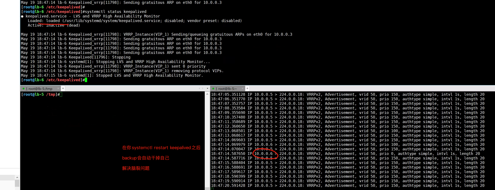
情况2：master出现问题
问题背景
刚才的脚本解决了backup抢夺VIP的问题；
但是如果master出了问题呢？比如master的nginx挂了，那keepalived没啥用了，服务还是挂了。
监控master故障的脚本。
思路
master机器脚本
1. 如果自己的nginx已经不存在了，keepalived还活着，尝试重启nginx
2. 如果重启nginx失败，干掉自己的keepalived，放弃master资源，让backup继续干活
脚本如下
cat > /etc/keepalived/check_web.sh << 'EOF'
#!/bin/bash
NGINX_STATUS=$(ps -ef|grep ngin[x]|wc -l)
# 如果nginx挂了
if [ ${NGINX_STATUS} == 0 ]
then
systemctl restart nginx
# 如果重启失败
if [ $? == 1 ]
then
# keepalived没必要活着了
systemctl stop keepalived
fi
fi
EOF
keepalived调用脚本
cat > /etc/keepalived/keepalived.conf << 'EOF'
global_defs {
router_id lb-5
}
vrrp_script check_web {
script "/etc/keepalived/check_web.sh"
interval 5
}
vrrp_instance VIP_1 {
state MASTER
interface eth0
virtual_router_id 50
priority 150
advert_int 1
authentication {
auth_type PASS
auth_pass 1111
}
virtual_ipaddress {
10.0.0.3
}
track_script {
check_web
}
}
EOF
注意给脚本加上权限
[root@lb-5 ~]#chmod +x /etc/keepalived/check_web.sh
模拟故障
1.确保master和backup正常
2.停止master的nginx
[root@lb-5 ~]#chmod +x /etc/keepalived/check_web.sh
3.发现你此时就已经没法停了，keepalived帮你自动重启nginx
4.你可以试试让nginx起不来
[root@lb-5 ~]#echo 'yuchaoit.cn' >> /etc/nginx/nginx.conf
[root@lb-5 ~]#systemctl stop nginx
[root@lb-5 ~]#
5.此时已经正确切换到backup了。
修复master
[root@lb-5 ~]#systemctl restart nginx
[root@lb-5 ~]#systemctl restart keepalived
查看backup是否归还VIP资源。
小结
Keepalived是一个优秀的高可用工具，不仅可以结合nginx做高可用性负载均衡；
也可以和mysql数据库软件实现主从复制的高可用性；
生产环境负载均衡集群
阿里云提供的高可用性负载均衡文档
https://help.aliyun.com/document_detail/67915.html
看动画片学习什么是负载均衡
待你和于超老师学完了 （高可用性负载均衡集群），在你真真切切的动手练习了，以及掌握其中内部原理了。
再去维护公有云提供的阿里云SLB，就是易如反掌了。
在阿里云上，点击购买不同价格的负载均衡，获取到一个SLB的IP地址（nginx + keepalived）
然后再填写后端的服务器组即可（upstream 地址池）
老铁们，你学废了吗？~~~~
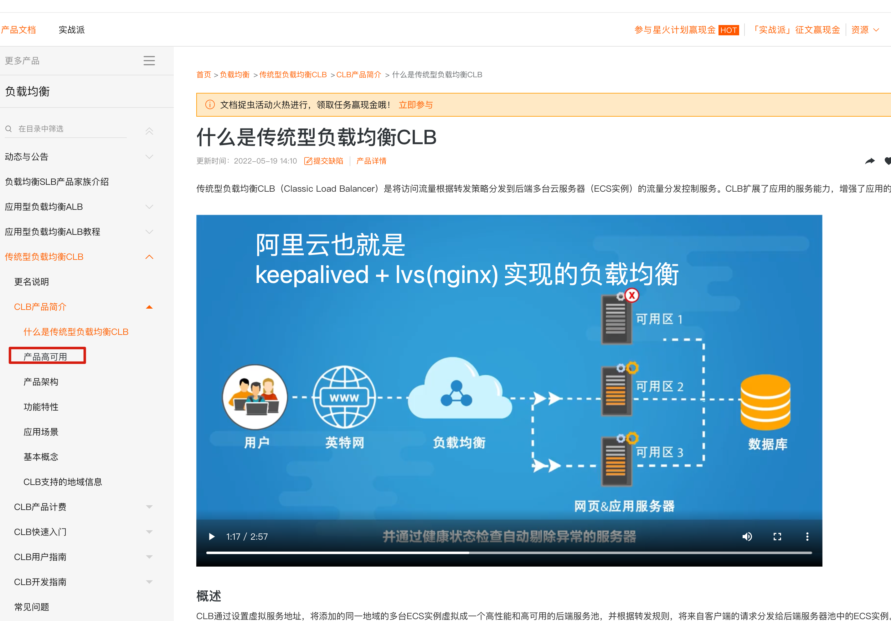